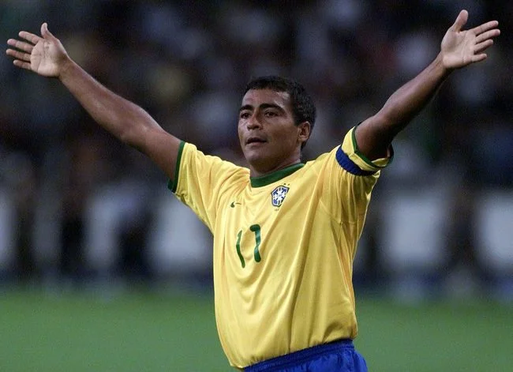

Denis Rodman, nascido em 13 de maio de 1961, é um ex-jogador profissional de basquete norte-americano, conhecido por sua carreira marcante na NBA e por seu estilo de vida excêntrico. Rodman ganhou fama principalmente como um dos melhores reboteadores e defensores da história do basquete, apesar de não ser um dos maiores pontuadores.
Ele jogou por times como Detroit Pistons, San Antonio Spurs, Chicago Bulls, Los Angeles Lakers e Dallas Mavericks. Rodman foi peça fundamental nas conquistas de cinco campeonatos da NBA: dois com os Pistons (1989 e 1990) e três com os Bulls (1996, 1997 e 1998), durante a era de ouro da equipe liderada por Michael Jordan.
Além de suas habilidades em quadra, Rodman era conhecido por seu visual extravagante, com cabelos coloridos, tatuagens e piercings, além de seu comportamento controverso, tanto dentro quanto fora das quadras. Sua personalidade única e sua vida pessoal tumultuada, incluindo amizades com figuras como o líder norte-coreano Kim Jong-un, tornaram-no uma figura midiática além do esporte.
Após a aposentadoria, Rodman continuou a ser uma figura pública, participando de reality shows, escrevendo livros e mantendo uma presença constante na mídia. Sua contribuição para o basquete foi reconhecida com sua indução no Basketball Hall of Fame em 2011.

Romário
Romário, cujo nome completo é Romário de Souza Faria, nasceu em 29 de janeiro de 1966 no Rio de Janeiro, Brasil. Ele é considerado um dos maiores atacantes da história do futebol, conhecido por sua habilidade excepcional dentro da área, faro de gol e personalidade marcante.
Romário teve uma carreira brilhante, atuando em clubes como Vasco da Gama, Flamengo, PSV Eindhoven (Holanda), Barcelona (Espanha), Valencia (Espanha) e Fluminense, entre outros. No Barcelona, formou uma parceria lendária com Hristo Stoichkov, ajudando o clube a conquistar títulos importantes, como a La Liga e a Supercopa da Espanha.
Um dos momentos mais destacados de sua carreira foi a Copa do Mundo de 1994, nos Estados Unidos, onde foi fundamental para a conquista do tetracampeonato pela Seleção Brasileira. Romário foi eleito o melhor jogador do torneio e ganhou a Bola de Ouro da FIFA naquele ano.
Além de sua habilidade em campo, Romário era conhecido por seu estilo de vida polêmico e personalidade forte, o que muitas vezes gerava controvérsias. Após se aposentar dos gramados, ele seguiu uma carreira política, sendo eleito senador pelo estado do Rio de Janeiro em 2014.
Romário marcou mais de 1.000 gols em sua carreira, um feito raro no futebol, e é lembrado como um dos maiores ídolos do esporte no Brasil. Sua contribuição para o futebol foi reconhecida com diversos prêmios e homenagens, incluindo sua inclusão na lista dos melhores jogadores da história da FIFA.
Curiosidades:
Denis Rodman, além de ser um dos maiores reboteadores da história da NBA, era conhecido por seu visual excêntrico, com cabelos coloridos e tatuagens, e por seu comportamento fora do comum. Ele chegou a se ausentar de treinos para participar de festas e até se envolveu no mundo da luta livre profissional durante sua carreira. Uma das curiosidades mais surpreendentes é sua amizade com o líder norte-coreano Kim Jong-un, com quem ele visitou a Coreia do Norte várias vezes, gerando polêmica e fascínio na mídia. Rodman também foi tema de documentários e reality shows, mostrando sua vida além do basquete.
Romário, por sua vez, além de ser um dos maiores artilheiros da história do futebol, com mais de 1.000 gols marcados, era famoso por sua personalidade irreverente e declarações polêmicas. Ele se autointitulava "baixinho" (por sua estatura de 1,67m) e orgulhava-se de sua habilidade dentro da área. Romário também era conhecido por seu estilo de vida boêmio, frequentemente associado a festas e noitadas, mas sempre mantendo um desempenho excepcional em campo. Após se aposentar, ele seguiu uma carreira política, sendo eleito senador pelo Rio de Janeiro, e continuou a ser uma figura midiática, sempre com opiniões fortes e humor característico.
Ambos, Rodman e Romário, são exemplos de atletas que, além de seus talentos esportivos inegáveis, conquistaram o público com suas personalidades únicas e histórias fora do comum.